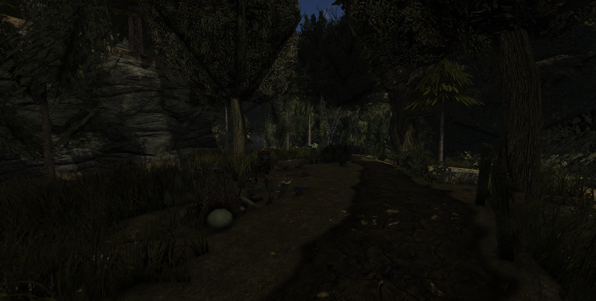
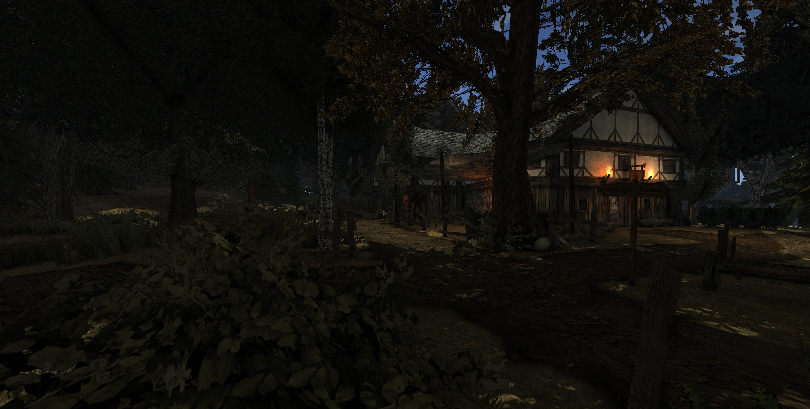

Die YouTube-Version des neuesten Bigfarm-Showcases!
ÜBERSICHT
Über die Modifikation
Die Anniversary Edition erweitert Gothic II: Die Nacht des Raben um neue Inhalte, Quests und Geschichten. Die konkrete Projektbeschreibung, Screenshots, Credits und der finale Download können hier später ergänzt werden.
Features
- Baut auf „Die Nacht des Raben“ auf
- Neue Gebiete und Dungeons
- Verbesserte KI und Balancing
- Neue Charaktere und Dialoge
Mediensammlung
24.08.2026 YouTube-Short · Crygreg Bigfarm-Vergleich
09.08.2026 YouTube-Short · Crygreg Lobarts Farm: Original vs. Neu
Fühlte mich süß, hab den ersten Vergleichs-Short gedroppt 💅 👀
30.07.2026 Entwicklungsupdate + Screenshots · Crygreg Lobarts Farm & Patreon
Die erste Release-Version von Lobarts Farm wird finalisiert. Dazu experimentieren wir mit neuer Vegetation – wie immer W.I.P.: Die Farben des Grases können sich noch leicht ändern.
Als Inspiration diente dieses fantastische Artwork – mir gefallen besonders das Licht und die Atmosphäre (Credits gehen an Martin Nawaz!).
Wie kürzlich angekündigt bin ich der Empfehlung gefolgt und habe einen Patreon eröffnet, auf dem ich ausführlichere Entwicklungs-Updates teile, Umfragen erstelle und Meinungen einhole – oder unterstützt uns über Ko-Fi!
Hinweis: Es gibt KEINE weiteren Vorteile dabei. Das Projekt soll nichtkommerziell bleiben – keine „exklusiven“ Pre-Release-Builds o. Ä. Patreon und Ko-Fi sind schlicht Wege, dieses und zukünftige Projekte zu unterstützen; fast alles Geld (und mein eigenes) fließt ohnehin in die Mod. Jede Unterstützung – finanziell oder nicht – wird sehr geschätzt!
Wir arbeiten weiter an der ersten spielbaren Version – hoffentlich noch dieses Jahr, wenn es klappt.
11 neue Screenshots

20.06.2026 Screenshot · Crygreg Am Lagertor
29.04.2026 Entwicklungsupdate + Screenshots · Crygreg Vobbing-Feinschliff
Ein weiterer Tag, ein weiteres Update zur laufenden Feinabstimmung des Vobbings der Spielwelt. Alles wie immer W.I.P.
Riesiger Dank geht an Snowfox für die zusätzlichen, fantastischen Beiträge in Sachen Spacering und Ideen!


27.03.2026 Entwicklungsupdate + YouTube-Videos · Crygreg Wähle deinen Weg
Der 27. März ist da und damit dürft ihr diesmal, wie versprochen, euren eigenen Weg wählen!
Außerdem hat das 25th-Anniversary-Video Untertitel erhalten (vorerst auf Deutsch, Englisch, Polnisch und Russisch – wobei die letzten beiden maschinell übersetzt sind, also hoffentlich passend)!
Geht einfach zurück zum 25th-Anniversary-Video und springt ans Ende, um zu wählen!
(Sicherheitshalber und der Einfachheit halber verlinke ich alle Videos trotzdem unten.)
Download
Hier kann später der finale Download, ein GitHub-Release oder ein externer Download-Link eingetragen werden.
DOWNLOADDer Download ist noch nicht verfügbar.